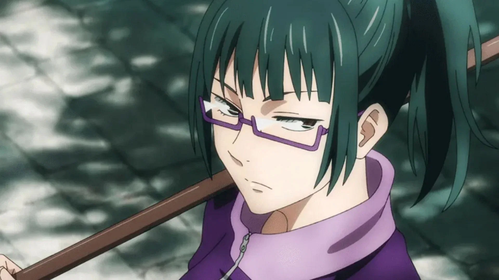
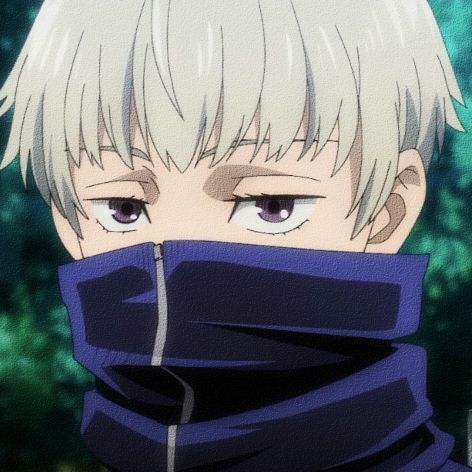

Gojo melawan Sukuna.
| Image | Name | Description |
|---|---|---|
 |
Itadori Yuji | Itadori Yuji merupakan seorang siswa sekolah menengah dengan kemampuan fisik yang luar biasa. Yuji dikenal karena keberanian dan keberaniannya. Dia tidak ragu untuk menempatkan dirinya dalam bahaya untuk melindungi orang lain. Dia pun berani menghadapi tantangan secara langsung. |
 |
Gojo Satoru | Gojo dianggap sebagai salah satu karakter terkuat dalam seri ini. Dia adalah penyihir yang sangat terampil dan kuat, mampu menggunakan teknik jujutsu canggih. Kemampuan tempurnya luar biasa, dan dia sering digambarkan sebagai kekuatan yang tangguh dalam pertempuran. |
| Megumi Fushiguro | Megumi memiliki rasa tanggung jawab yang kuat dalam menghadapi kutukan dan melindungi orang dari ancaman supernatural. Dia mengambil perannya sebagai penyihir jujutsu dengan serius dan berusaha untuk memenuhi tugasnya. | |
| Nobara Kugisaki | Nobara dikenal sebagai karakter Jujutsu Kaisen yang sangat mandiri dan tegas. Dia tidak menghindar dari mengungkapkan pendapatnya atau membela dirinya sendiri. Kepercayaan dirinya terbukti dalam tindakannya dan cara dia membawa dirinya sendiri. | |
| Geto Suguru | Geto dikenal karena keyakinannya yang kuat dan kontroversial tentang dunia, kutukan, dan kemanusiaan. Filsafatnya menantang pandangan konvensional yang dipegang oleh banyak penyihir. Seiring berjalannya cerita, Suguru Geto menjadi antagonis utama. Tindakan dan keputusannya berkontribusi pada konflik dan tantangan yang dihadapi oleh protagonis. Geto terampil dalam manipulasi dan bisa licik dalam berurusan dengan sekutu mau pun musuh. Kemampuannya untuk memanipulasi orang lain adalah aspek kunci dari karakternya. Geto menjadi pemimpin kelompok roh terkutuk, bekerja menuju visinya sendiri untuk dunia dan menantang tatanan sihir jujutsu yang ada. Pengejarannya akan kekuasaan dan pengetahuan tentang kutukan mendorong banyak perkembangan karakternya. | |
 |
Ryomen Sukuna | Sukuna sangat arogan dan memancarkan kepercayaan diri. Dia sepenuhnya menyadari kekuatannya yang luar biasa dan sering menunjukkan sikap menghina terhadap orang lain. Sukuna digambarkan memiliki sifat sadis dan kejam. Terlepas dari sikapnya yang brutal dan agresif, Sukuna bukannya tanpa kecerdasan. Dia bisa strategis dan mampu membuat keputusan yang diperhitungkan untuk mencapai tujuannya. Keberadaan Sukuna menjadi ancaman signifikan bagi para penyihir Jujutsu dalam seri ini. Konfliknya dengan mereka mendorong banyak plot menyeluruh. |
|  | Maki Zenin | Maki adalah petarung yang terampil dan kuat. Dia unggul dalam pertempuran fisik dan menggunakan berbagai senjata, termasuk pedang terkutuk. Kemahirannya dalam pertempuran adalah salah satu ciri khasnya. Maki memiliki rasa keadilan yang kuat. Dia termotivasi oleh keinginan untuk melindungi orang lain dari kutukan dan untuk membuat dampak positif di dunia sihir jujutsu. Dia memiliki ikatan yang kuat dengan mereka yang menghargai dan mendukungnya, dan dia membalas kesetiaan itu. Meskipun demikian, dia tidak mentolerir omong kosong dan lugas dalam tindakan dan keputusannya. |
|  | Toge Inumaki | Inumaki biasanya mempertahankan sikap tenang dan terkumpul. Meskipun komunikasi verbalnya terbatas, tindakan dan ekspresinya menyampaikan rasa fokus dan tekad. Meski gaya komunikasi Inumaki mungkin tampak membatasi, dia sangat peduli dengan kesejahteraan teman-teman dan sekutunya. Tindakannya mencerminkan kepedulian yang tulus terhadap keselamatan orang-orang di sekitarnya. Karena kutukan yang terkait dengan pidatonya, Inumaki terbatas dalam kata-kata yang bisa dia ucapkan tanpa menyebabkan kerusakan. Keterbatasan ini menambah unsur tantangan pada interaksinya dengan orang lain. |
| Toji Fushiguro | Toji Fushiguro merupakan seorang anggota klan besar Zenin. Namun, ia terlahir tanpa energi terkutuk. |